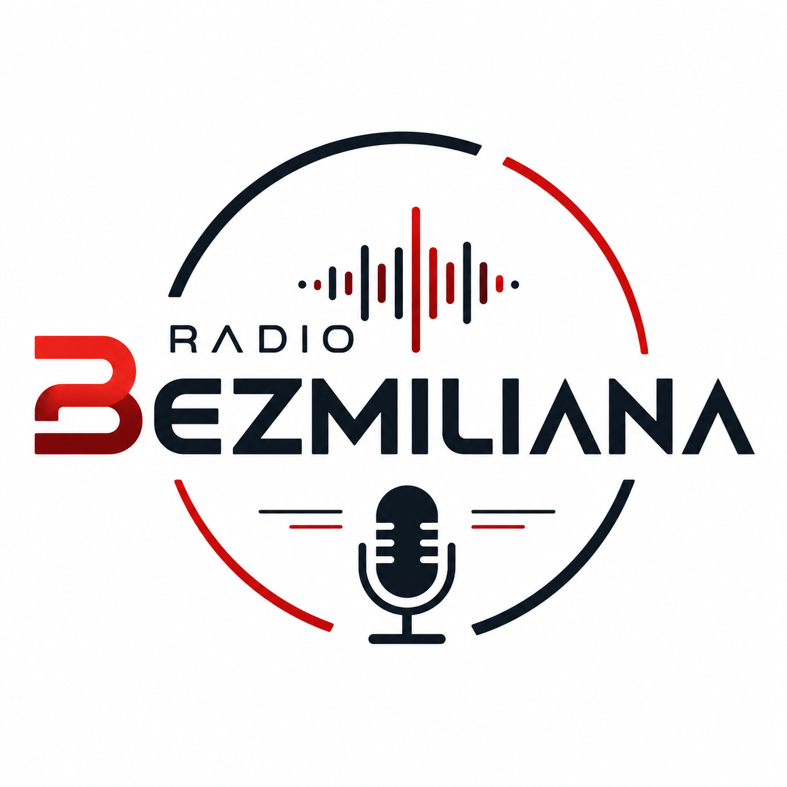
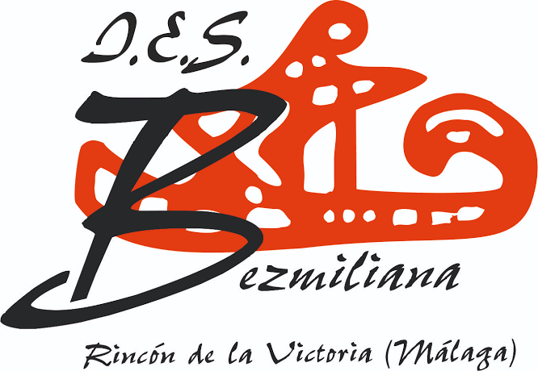

Bezmi Noticias
Lo más importante que pasa en el instituto y en Rincón de la Victoria, contado por su alumnado.
Hasta el 31 de octubre puedes apuntarte al equipo de la radio del instituto. ¡Todos los cursos son bienvenidos!
La radio del IES Bezmiliana
Noticias, música, entrevistas y mucho más, hechos por el alumnado y el profesorado de Rincón de la Victoria.

Lo que hacemos
Cada programa lo crea un equipo del instituto. Elige el tuyo.
Lo más importante que pasa en el instituto y en Rincón de la Victoria, contado por su alumnado.
Las canciones elegidas por el alumnado, con sus dedicatorias y sus listas favoritas.
Conversaciones con profesorado, familias, antiguos alumnos y personas del barrio.
Recomendaciones, reseñas y debates sobre lo que leemos y lo que vemos.
Curiosidades y experimentos explicados de forma clara y divertida.
Resultados, torneos del recreo y entrevistas a deportistas del centro.
Las personas
Profesorado y alumnado que hacen posible Radio Bezmiliana.
Coordinación general
Coordinación técnica
Locución
Guion y redacción
Técnica de sonido
Redes y difusión

Quiénes somos
Radio Bezmiliana nace en el IES Bezmiliana, en Rincón de la Victoria (Málaga), como un espacio donde el alumnado aprende comunicando: escribe guiones, entrevista, locuta, edita y emite.
Súmate
Hay un hueco para ti, te guste hablar, escribir, editar o simplemente organizar. El plazo termina el 31 de octubre.
Presenta, entrevista y da vida a los programas.
Escribe noticias, secciones y entrevistas.
Controla la mesa, graba y edita el sonido.
Cuenta lo que hacemos en redes y en el centro.
Hablemos
¿Quieres proponer un tema, resolver una duda o unirte al equipo? Escríbenos.